Il m’a été donné le plaisir de découvrir récemment l’Église orthodoxe de Biarritz.
Fondée en 1892, l’Église orthodoxe de Biarritz a une histoire relativement courte. En juillet 1854, l'empereur Napoléon III décide de construire une résidence à Biarritz pour satisfaire l'impératrice Eugénie qui souhaitait se rapprocher de son Espagne natale. L'endroit devient rapidement un lieu de séjour privilégié pour les têtes couronnées européennes.
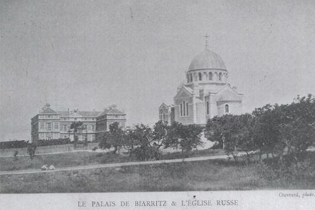Biarritz va y gagner son titre envié de « reine des plages et plage des rois » et, vers le milieu du XIXe siècle, les aristocrates Russes vont venir régulièrement pour visiter Napoléon III et l'Impératrice à la villa Eugénie. La Reine Nathalie de Serbie et les Grands Ducs de Russie font partie des hôtes les plus prestigieux.
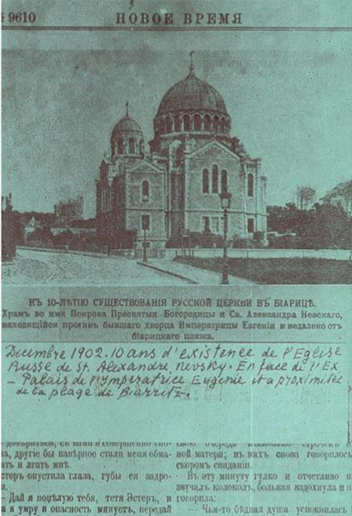Une forte colonie russe existait déjà dans le Sud-Ouest de la France. L’aristocratie russe avait en effet déjà découvert les bienfaits du climat doux qui a fait la réputation de la capitale du Béarn.
La communauté russe de Pau fit construire une église orthodoxe en 1867, la troisième en France après Nice (1860) et Paris (1861). La Côte Basque n’étant pas bien loin, la présence de russe à Biarritz prend vite un essor important, essentiellement entre septembre et novembre, la « saison russe » !
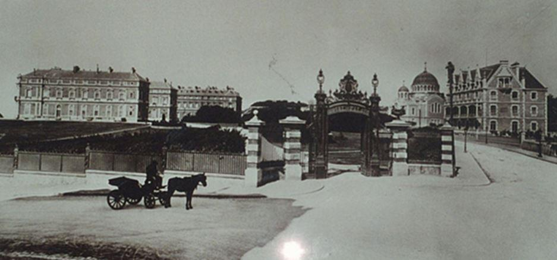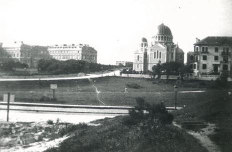À partir de la fin du XIXe siècle, les Russes sont si nombreux à Biarritz qu'un quart de la population de la ville parle la langue du tsar. Des cortèges d'aristocrates et leurs familles arrivent en wagons-lits de Saint-Pétersbourg respirer le bon air marin atlantique avant de retourner affronter les rigueurs de l'hiver dans la Russie Impériale.
Constantin, Wladimir, Alexis, Boris, Cyrille, aucun Grand-Duc ne manque à l'appel. Cette « Saison Russe » offre à la ville des fêtes somptueuses dont le faste reste encore dans les mémoires et Biarritz est alors le théâtre d’une vie insouciante et raffinée. C’est durant cette époque que des fonds sont collectés pour la construction d’une église orthodoxe à Biarritz.
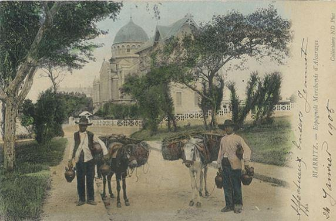Cependant, en 1870, après la chute de Napoléon III, le nouveau gouvernement républicain va refuser l’autorisation d’une église russe à Biarritz. Ainsi, lorsque l’ancien palais impérial, la « Villa Eugénie », est vendue et transformée en hôtel, le « Palais Biarritz », on y installe provisoirement dans un des salons une chapelle orthodoxe qui sera consacrée le 11 septembre 1887 ; l’iconostase et les objets de culte proviennent de Saint Pétersbourg.
Cette chapelle s’avère vite trop petite compte tenu du nombre important de fidèles ce qui incite la communauté à chercher rapidement une solution définitive. Il faudra attendre 1888 pour obtenir l’autorisation grâce à l’intervention du Tsar Alexandre III et au dévouement du Père Hérodion, fondateur et aumônier de cette paroisse et de celle de Pau. En 1889, les dons des fidèles, résidents de Biarritz ou souscripteurs de Saint-Pétersbourg, permettent l’acquisition d’un terrain en face de l’hôtel et d'en poser la première pierre.
L'édifice est achevé après trois années de construction et consacré à la "Protection de la Mère de Dieu" et à « Saint Alexandre Newsky ». L’église, dont l’architecture affirme son caractère byzantin par ses coupoles rehaussée d'or, est inaugurée le 25 septembre 1892 en présence de membres de la famille impériale russe et de hauts dignitaires.
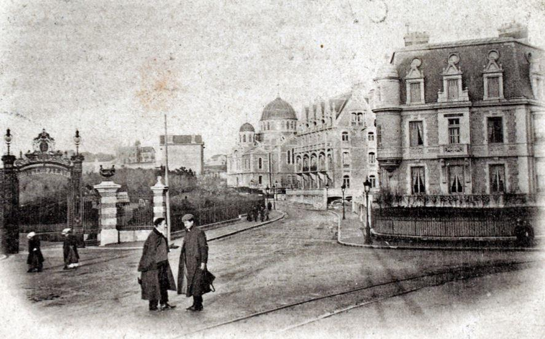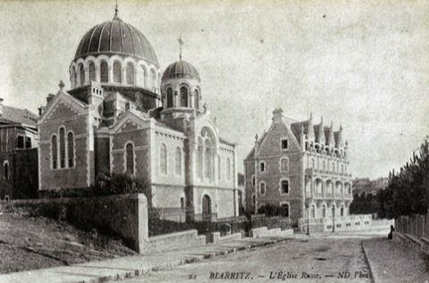À l'aube du XXe siècle, vient l'exil douloureux des milliers de Russes blancs fuyant la terrible révolution bolchevique. Le prestige de Biarritz, le souvenir des temps heureux font que la colonie russe augmente considérablement suite à la Révolution d’Octobre de 1917. Nombreux sont ceux qui - après avoir souvent fait étape à Paris - s'établiront sur la Côte d'Azur ou la Côte Basque.
C'est à Biarritz que Stravinsky composera les fameuses Noces ; le célèbre compositeur y résidera durant trois ans dans sa villa proche de l'église orthodoxe, Enfin, c'est à Biarritz que l'écrivain Nabokov rencontra - paraît-il - sa célèbre "Lolita". Mais les émigrés russes, riches en souvenirs, manquent souvent de ressources. Quelques galas annuels de bienfaisance au profit de l’église permettent néanmoins jusque dans les années 30 de faire face aux frais d’entretien... Tout le mérite de l’entretien du bâtiment de l’église de Biarritz et de la sauvegarde de la tradition orthodoxe revient à la communauté d'immigrés russes de cette époque.
L’ÉGLISE
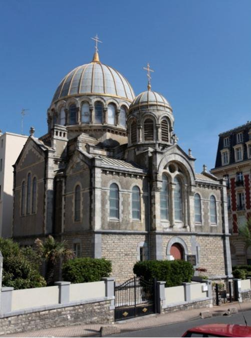Comme toutes les églises orthodoxes depuis les premiers siècles, l’église orthodoxe de la Protection-de-la-Mère-de-Dieu et de Saint-Alexandre-de-la-Néva est orientée vers l’Orient. Le plan obéit au schéma byzantin traditionnel avec ses trois parties en forme de croix grecque surmontée d’une coupole.
Durant 120 ans l'église a dû subir plusieurs travaux de restauration partielle. La restauration de 1984 a pu être effectuée grâce à des souscriptions et aux dons venus du monde entier (dont une contribution d’Alexandre Soljenitsine). Néanmoins, la proximité de l’océan a fortement dégradé l’état de cette église et il apparaît urgent de pouvoir de nouveau relancer une restauration de grande ampleur.
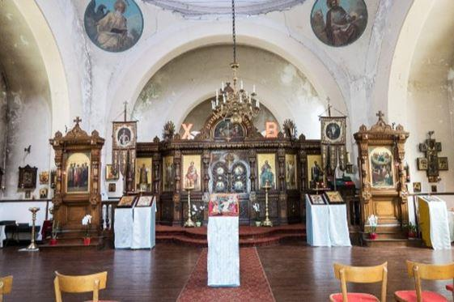L’iconostase réalisée dans du bois de chêne sculpté comporte au centre les Portes Royales, elles symbolisent l’entrée du royaume de Dieu : y sont donc représentées les icônes des annonciateurs de la venue de ce royaume, soit : l’archange Gabriel et la Vierge Marie, et au-dessus les quatre évangélistes.
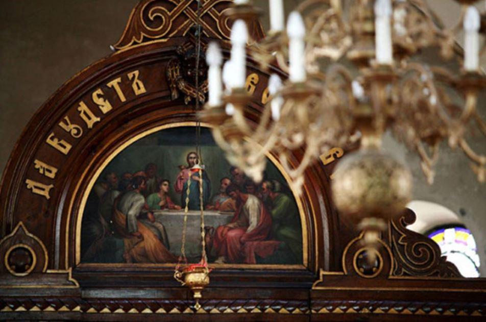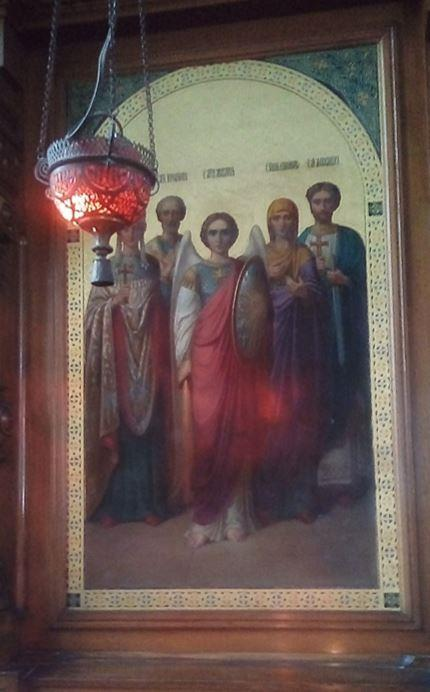Icône des saints patrons des fondateurs et donateurs de l’église :
L’icône représente Saint Hélène par qui la croix du Christ a été retrouvée, au centre l’archange Michel, puis Sainte Elisabeth ; au deuxième plan Saint Hérodion de Patfas – un des 70 apôtres de la première heure, décapité sous Néron ; patron du Père Hérodion, fondateur de cette église – et Saint Alexandre, premier évêque de Cappadoce et martyr, mort en prison en 251.
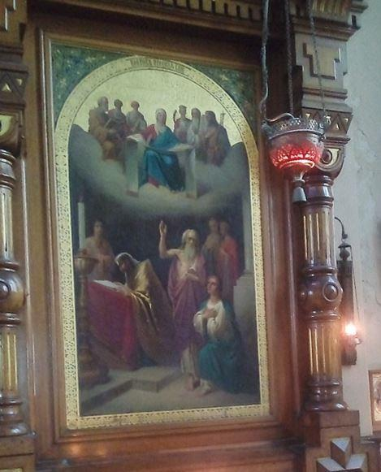L’icône de la Protection de la Mère de Dieu fait référence à l’apparition de la Vierge à Constantinople au Xe siècle ; lors de cette apparition, après avoir prié en compagnie de plusieurs saints, elle étendit son voile au-dessus du peuple rassemblé dans l’église, lui accordant sa protection contre l’invasion des peuplades slaves païennes. Cet événement est commémoré en octobre, lors de la fête paroissiale de l’église de Biarritz.
Depuis 1931, la paroisse est sous l’obédience du Patriarcat de Constantinople, dans le cadre de l'Exarchat (archevêché) des églises de tradition russe en Europe Occidentale, lequel est dirigé, à partir de 2013, par l'archevêque Job de Telmessos, exarque du patriarche. Ce choix discutable est d’ailleurs encore très controversé aujourd’hui et beaucoup de fidèles orthodoxes souhaiteraient un retour dans la juridiction du Patriarcat de Moscou.
Partager cette page